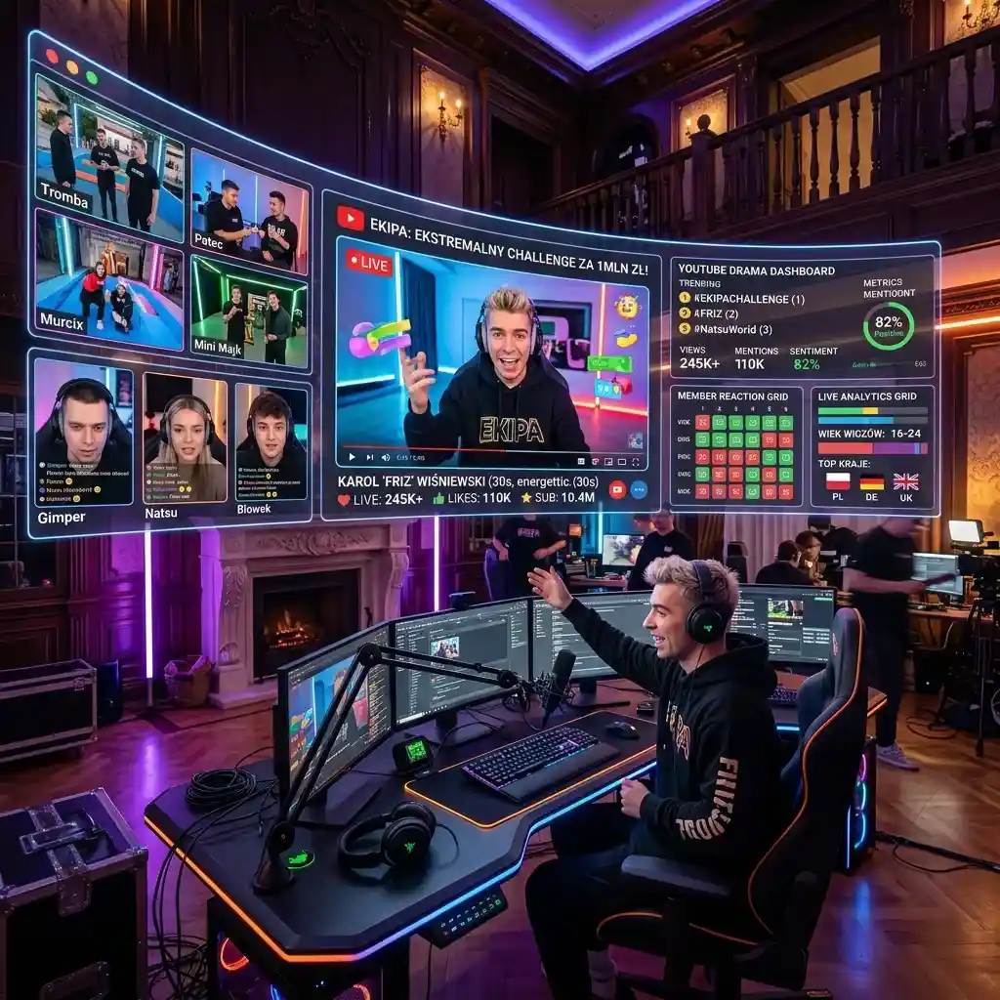

Following Poland's Top Creators: Multi-Screen Strategies for Friz and Ekipa Fans

Amazing Question: What happens to the creator-viewer relationship when audiences can observe an entire influencer house from multiple camera angles simultaneously, effectively stepping into the role of a live producer?
The landscape of Polish YouTube has undergone a radical transformation over the past decade, evolving from solitary vloggers recording in their bedrooms to massive, highly organized entertainment empires. At the absolute forefront of this unprecedented cultural shift are colossal creator collectives, most notably epitomized by Karol "Friz" Wiśniewski and the iconic Ekipa. These powerhouse groups have utterly redefined what it means to be an influencer in Poland, transitioning from simple internet celebrities to genuine mainstream moguls with branded merchandise, chart-topping music albums, and even publicly traded companies. Their daily lives, dramatic challenges, and intricate social dynamics are devoured by millions of intensely dedicated fans, creating an insatiable demand for continuous, high-quality content. Tracking the sprawling narrative of these creator houses across dozens of interconnected YouTube channels, intricate Instagram Stories, rapid-fire TikTok updates, and expansive Twitch streams requires a radically new approach to digital media consumption.
The Phenomenon of the Polish Creator House
The "creator house" model—where multiple influential personalities live, work, and collaborate under one very expensive roof—has proven to be an astonishingly effective strategy for exponential audience growth. Friz and Ekipa popularized this format in Poland to a degree that defied all conventional media expectations, generating an intricate web of interwoven storylines that keep viewers constantly engaged. When a major event occurs within the house, it is rarely covered from just a single, isolated perspective. Instead, it is documented from five, six, or even ten different camera angles, each corresponding to a different member’s deeply personal vlog. To fully grasp the nuance of an argument, the genuine reaction to a massive surprise, or the chaotic behind-the-scenes reality of a high-production challenge video, dedicated fans quickly realized that watching just one perspective was entirely insufficient. This fragmented storytelling technique brilliant forces the audience to actively piece together the overarching narrative from multiple distinct, often conflicting viewpoints, creating an incredibly absorbing meta-game of content consumption.
Mastering the Multi-Channel Narrative Architecture
For the truly dedicated follower, consuming the daily output of a major Polish creator collective is akin to watching a complex, multi-layered reality television show where every cast member simultaneously operates their own competing network. Consider a scenario where Friz organizes an elaborate, high-stakes hide-and-seek challenge spread across an extensive manor estate. Friz’s main channel video will inevitably provide the primary, heavily edited narrative arc—the polished overview of the event. However, to truly appreciate the tension, viewers must seek out the individual POV (point-of-view) videos uploaded by the participants hiding in closets, scrambling across rooftops, or desperately attempting to evade capture. Watching these deeply personal perspectives linearly, one after another, fundamentally ruins the suspense and critically disrupts the intended rhythm of the event. The most intensely engaged fans require a sophisticated method to synchronize these multiple viewpoints, allowing them to experience the chaotic reality of the challenge exactly as the participants did—simultaneously and intensely.
Constructing Your Personal Observer Dashboard
This incredibly complex consumption challenge is precisely where advanced multi-screening tools like YoutubeMulti transition from convenient utilities to absolute necessities. By intelligently leveraging the power of split-screen technology, fans can completely reconstruct the multifaceted narrative of the creator house on their own desktop. Imagine a perfectly optimized multi-monitor setup: one generously sized panel is dedicated entirely to the primary, high-definition vlog upload, serving as the foundational narrative anchor. Surrounding this central video feed, you can meticulously arrange three or four perfectly tiles smaller windows, each actively streaming the corresponding perspective videos from the other influencers involved in the same event. This dynamic configuration effectively transforms the passive viewer into an active digital producer, allowing them to seamlessly shift their focus between the main storyline and the crucial interpersonal dynamics constantly playing out in the periphery. It is the ultimate, unparalleled way to achieve total immersion in the Polish YouTube ecosystem, guaranteeing that not a single subtle micro-expression or hidden joke goes unnoticed.
Real-Time Streaming and Infinite Live Interactions
While carefully edited vlogs form the sturdy backbone of the creator economy, live streaming has rapidly become the beating heart of immediate fan interaction. Countless members of top Polish collectives maintain rigorous streaming schedules on platforms like Twitch or YouTube Live, fostering deeply personal, real-time connections with their most ardent supporters. When monumental, unscripted events occur—such as a massive group game drop, an unexpectedly dramatic intra-house dispute, or a spontaneous, highly emotional reaction to breaking internet news—the entire collective frequently goes live simultaneously. Choosing which single stream to watch effectively means missing out on the spontaneous, chaotic reactions of everyone else. Utilizing YoutubeMulti in these high-stakes, real-time scenarios is utterly game-changing. It empowers the viewer to monitor the primary gameplay or central reaction on their largest screen area, while dedicating adjacent tiles to the secondary face-cams and rapidly scrolling chat feeds of the other house members. This ensures a comprehensive, panoramic view of the live event, fundamentally preventing the intensely frustrating feeling of missing out on the best content available.
The Inevitable Future of Engaged Fandom Consumption
As the towering Polish creator economy continues its relentless expansion and relentless professionalization, the sheer volume of high-quality content produced will only inevitably increase. Relying on traditional, single-tab viewing methods is rapidly becoming an entirely obsolete strategy for truly engaging with this dynamic media ecosystem. The most sophisticated, dedicated fans understand that modern media consumption requires modern, powerful tools. Adopting a comprehensive multi-screen approach, seamlessly facilitated by platforms exactly like YoutubeMulti, isn't just about absurdly watching more videos simultaneously; it is fundamentally about watching videos better, deeper, and more intelligently. It elevates the digital experience from mindless algorithm-driven scrolling to an active, deeply immersive participation in the sprawling, interconnected narratives crafted by Poland’s biggest digital stars. By fully embracing the remarkable power of multi-viewing technology, you fundamentally guarantee your place at the very center of the cultural zeitgeist, forever prepared to experience every multifaceted angle of the absolute best content the Polish internet has to spectacularly offer.